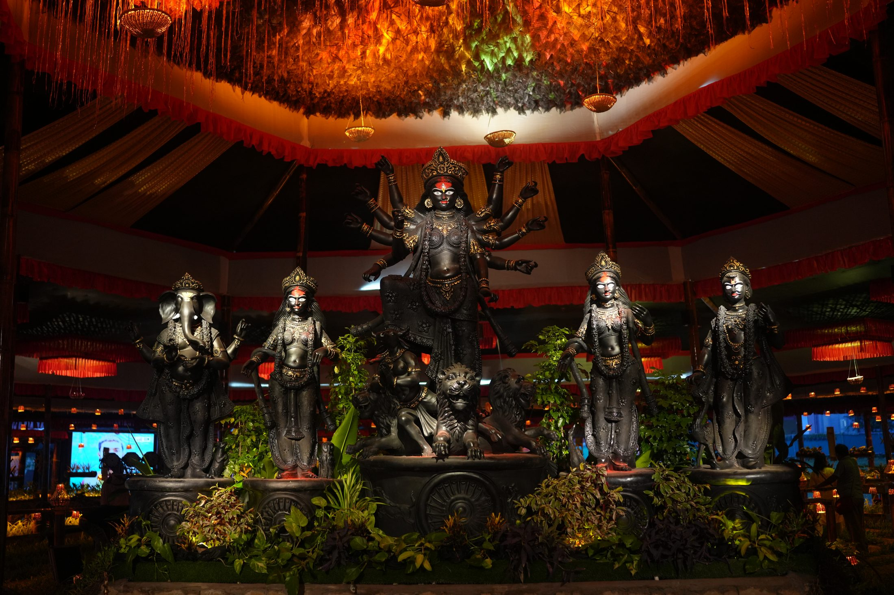

Crop
Cereals, pulses, oilseeds and fodder. Residue can become livestock feed or compost.

For farmers and FarmTech + AgriTech readers
This Pujo puts the annadata in view, then shows Integrated Farming as a working system on small land. A live farm is being built at the Puja venue, Munshir Bheri.
Pictured: Durga Puja Mahotsav 2025 at the IIT Kharagpur Research Park, organised by KarmYog for the 21st Century Foundation. Historical / reference. Not the 2026 pandal.
Bharatiya Krishak Samaj Pujo is a Durga Puja that names the farmer inside the gathering. Recognition and awards for unnamed farmers belong to the public week.
This experience’s job is different: to show the livelihood that follows once the farmer is in view. You are reading a farming brief that sits beside the Puja, not a decoration brief.
Often that crop is paddy. Market price, weather, flood, delayed rain and bought inputs can hit that one crop all at once. Between harvests, cash can run thin. That is how many small holdings actually live.
Integrated Farming answers with a different shape: several enterprises on the same land, so work, water and cash can move through the year. Mix, scale and results vary. The invitation is to understand the model, and to see a live farm being built where the idea can be walked.
See the farm as a living system. The holding is designed so one activity can feed another. Closed loop is the design intention. Outcomes vary. It is not a promise of zero waste or fixed income.
Crop residue
Livestock / compost
Straw and stalks can feed animals or beds.
Manure
Energy / organic fertiliser
Biogas where installed; slurry to soil and pond plankton.
Pond silt
Fields
Nutrient-dense silt to vegetable and crop beds.
Horticulture greens
Fishery / poultry feed
Surplus greens can supplement feed.
Water
Crop, fish, horticulture
One water system serving several enterprises.
Produce
Household and market
Food and cash returning to the family.
Cereals, pulses, oilseeds and fodder. Residue can become livestock feed or compost.
Vegetables, fruit and homestead trees, including multi-tier planting on pond bunds.
Small dairy and related animals. Poultry and duckery on the same holding. Manure and droppings return to compost, soil or the pond–soil system where designed that way.
The pond is both water bank and production unit. Harvest, storage and nutrient exchange with horticulture and livestock layouts.
Biomass returns. Soil health is a reason the model exists: work over seasons, not a one-week festival claim.
The farm feeds the household first. Surplus moves to market. This page does not invent a guaranteed buyer. Bee and mushroom are allied livelihoods where they fit. They are not mandatory on every holding.
An illustrative Bharatiya Krishak Samaj model for about 1 to 2.5 acre holdings. This is not a mandatory farm size, not an eligibility rule, and not a promise of income. Mix, scale and results vary.
A pond as rainwater store and fishery. Native carps such as Rohu, Katla, Mrigal and other indigenous fish where suitable. Nutrient-rich pond water can support careful irrigation.
Raised bunds planted in tiers: canopy trees such as coconut, betel nut, drumstick and papaya; climbing vegetables on trellises; ground crops such as turmeric, ginger and leafy greens.
Small dairy units and poultry or duckery beside or over the pond where layout allows. Duck–fish and manure–compost relationships are part of the model sketch.
Composting, vermicompost and related bio-input work so biomass returns to soil rather than leaving the farm unused.
Soil moisture monitoring and drip, solar pond aeration, crop-health diagnostics and yield tracking where they help. Model-based. Not a promise that every tool is already installed on every farm.
FarmTech and AgriTech means careful tools inside the Integrated Farm, not a software product pitch. The examples below are illustrative categories in the model sketch. They are not a kit shipped when you express interest, and this page does not list vendors or sell an app.
Moisture and drip observation where it can help use water carefully and reduce a bought input.
Aeration and water-quality observation where pond activity is part of the loop.
Observation and diagnostics to notice crop conditions earlier. Not a named product.
Watch daily yield and animal health where dairy or poultry sits in the loop. Illustrative. Not an installed gadget kit.
The farm is being built. It is not a finished showpiece. You are invited to follow it as it becomes a place you can walk. The same address is the confirmed Puja venue.
Being built
Munshir Bheri Management / Fishermen's CommitteeCome for the Puja at this address. The live farm on the same ground is still being built.

About 5,000 village integrated farms is a vision to work toward, not a completed count. Local teams of about 2 to 3 progressive farmers or FPOs still put in land, labour and working capital. Proposed seed-support sits beside that work, not instead of it. ₹1 lakh is not a farmer grant paid here.
If this loop is the kind of farm you want to understand, start the conversation.
This starts a conversation. It does not enrol you. It does not take payment. It does not pay ₹1 lakh. ₹1 lakh is proposed seed in the wider supporter story, not a farmer grant paid here.
Write to contact@bkswbengal.org if you wish to continue.
The Puja names the farmer inside the gathering. This page then shows the livelihood that follows: Integrated Farming, a live farm being built at the same place, and a conversation if you wish to continue.
Several farm activities on the same land, designed so leftover from one can help another.
Careful tools on the farm: monitoring, drip, pond energy, diagnostics, where they help. Not a named vendor programme. Not a kit shipped from this page.
No. Mix varies. Start from what land, water, labour and market allow.
No. About 1 to 2.5 acre is an illustrative working sketch, not a mandatory size.
No. Tools sit in the model where they earn their keep. They are not required to express interest.
No. This page does not sell an app and does not list vendors.
Munshir Bheri Management / Fishermen's Committee, Near Sukantanagar / Salt Lake Sector V, (East Kolkata Wetlands), Kolkata – 700091, West Bengal. It is the confirmed Puja venue. A live farm is being built at the same place.
The Puja is at this address during the civic window, 16-20 October 2026. The live farm on the same ground is still being built, not a finished showpiece.
No. Status is being built. The 19 August 2026 photograph is preparation, not a completed farm.
No. That is proposed seed in the wider supporter story, not a farmer grant paid here.
No. Expressing interest starts a conversation. It does not enrol you into a finished programme.
No.
You share your interest with the team. Nothing is enrolled automatically. If you wish to continue, write to contact@bkswbengal.org.
Organised by KarmYog for the 21st Century. Organising partner: Bharatiya Krishak Samaj.
No. Outcomes vary by land, water, labour, management, market and crop mix.